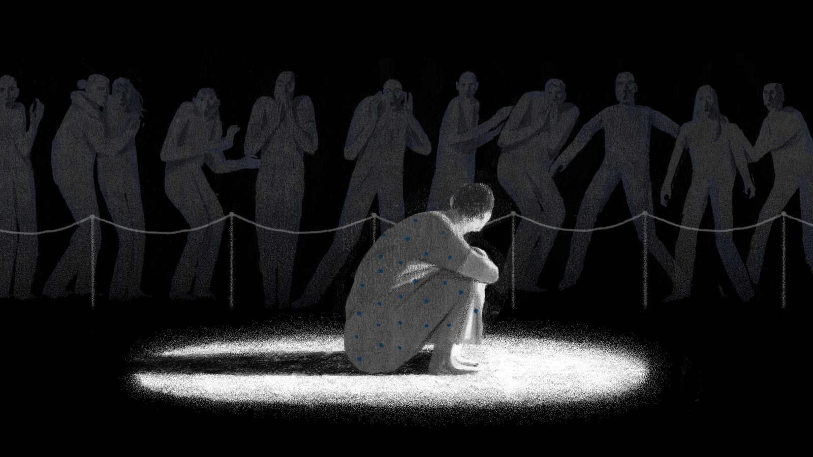

| Some people are going through depression like robert the doll |
And some people die from hullucinations like the russian sleep experiment were the paitents couldent sleep for a long time and the the went crazy most lossing there minds some wouldent eat or drink hulucinating thinking that a shadow figure poisend there food |
there is a place called the villisca axe murdur house and there was a murder and everyone blames a guy named kelly who got accused for him being mentaly insane |
most people do experiments on mentaly insane people and did somthing caled the russian sleep experiment insted of getting them to a mentel insane hospital |
there was a korean government that made the brothers home and put mentaly ensane people into slavery |
some people have anger issues some are sensitive and have panick attacks

A link to More on insanity of the human being